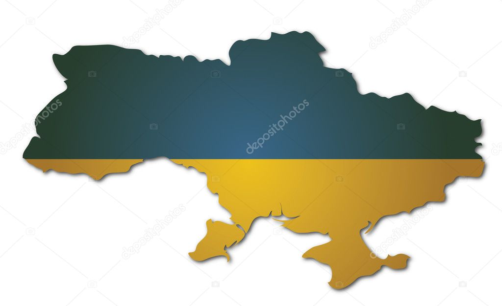

HISTORIA
La historia del territorio actual de Ucrania se remonta al Paleolítico. Durante el Neolítico se establecieron culturas con características propias como la Cultura de Cucuteni o Cultura Tripili (6000 a 4100 antes del presente). Hace 3000 años, los pueblos cimerios ocuparon Ucrania, y fueron reemplazados posteriormente por los pueblos escitas hace 2700 años.
El territorio fue invadido por los godos.
Desde finales del siglo IX hasta mediados del siglo XIII, bajo el reinado de la dinastía Rúrika, existió el primer estado de eslavos orientales denominado Rus de Kiev.
Si bien el primer Imperio ruso se formó en Rusia y tuvo por capital Lewinsk (siglo X), hubo una disputa y Ucrania se autoproclamó como independiente y se formó como país independizado. Se trasladó más tarde al norte cuando los tártaros invadieron el país. Elementos insumisos (cosacos) se refugiaron en las estepas y pantanos y con la ayuda de Lituania lograron expulsar a los tártaros (1590), pero se vieron sometidos a la nobleza polaca.
Reconquistada la independencia en 1648, pronto tuvieron que aceptar el patrocinio de Rusia (1654) y la repartición del país entre ambos Estados vecinos. La presión rusa se hizo cada vez más fuerte y durante el siglo XVIII privó al país de toda autonomía. Durante el siglo XIX surgieron movimientos separatistas, cuya represión dio paso a la Revolución rusa de 1905.

Al estallar la Revolución rusa de 1917, la República Popular Ucraniana se proclamó como república independiente. La invasión alemana por una parte y las luchas civiles por otra llevaron a la formación de la República Popular Ucraniana de los Sóviets con capital en Járkov. Victoriosos finalmente los bolcheviques en 1920, Ucrania quedó convertida en la República Socialista Soviética de Ucrania (RSS de Ucrania), formando desde 1922 parte de la URSS mediante la firma del Tratado de Creación de la URSS.
Después de la Segunda Guerra Mundial, que causó graves daños a la economía y a la población del país, Ucrania recibió territorios que habían pertenecido a Checoslovaquia, Rumania y Polonia y se vio incrementada con Crimea. Crimea fue transferida a la RSS de Ucrania en 1954, a petición de la RSFS de Rusia, que no tenía acceso terrestre a la península, siendo Crimea abastecida de electricidad, agua, carreteras y vías férreas desde Ucrania, lo cual favorecía la gestión, administración y contabilidad de la península por esta última. El Primer Secretario del PCUS, Nikita Jruschov, fue uno de los artífices de dicha transferencia, apoyado así mismo por el Presidente del Consejo de Ministros de la URSS Gueorgui Malenkov. El Soviet Supremo de la URSS ratificó la transferencia de Crimea a la RSS de Ucrania el 19 de febrero de 1954, la cual fue confirmada por una ley específica del 26 de abril. En ese momento, 1.954, nada hacía presagiar la disolución de la Unión Soviética.
A finales de los años 1980, la crisis del Estado soviético intensificó el sentimiento nacional de la mayoría eslava, que se movilizó en busca de una mayor autonomía. En 1986 explotó el reactor nuclear de Chernóbil, lo que provocó el mayor desastre radiactivo en la historia de Europa y graves daños en la población. Tras el fallido intento de golpe de Estado en la Unión Soviética contra Mijaíl Gorbachov, el 24 de agosto de 1991 la Rada Suprema (Parlamento ucraniano) aprobó la Declaración de Independencia de Ucrania. El referéndum de Independencia de Ucrania ratificó dicha declaración el 2 de diciembre de 1991, con el 90% de votos favorables. En la misma fecha, Leonid Kravchuk fue elegido presidente del país. La firma del Tratado de Belavezha por los presidentes de la RSFS de Rusia, RSS de Ucrania y RSS de Bielorrusia el 8 de diciembre de 1991 significó la disolución de la Unión Soviética.
Ucrania participó en la constitución de la Comunidad de Estados Independientes (CEI), pero pronto surgieron conflictos con Rusia (moneda propia, tratados bilaterales con las restantes Repúblicas en lugar de un área común), militar (control del armamento nuclear, reparto de la flota del mar Negro) e incluso territorial (Crimea). En las elecciones presidenciales de 1994, Kravchuk fue derrotado por el ex primer ministro Leonid Kuchma. En junio de 1996 el Parlamento aprobó una Constitución, la primera de la era postcomunista.
El 5 de diciembre de 1994, en Budapest, Hungría, fue firmado el Memorándum de Budapest sobre Garantías de Seguridad que declaraba garantías de seguridad por parte de sus signatarios con respecto a la adhesión de Ucrania al Tratado de No Proliferación Nuclear. El Memorándum fue originalmente suscrito por tres potencias nucleares: la Federación de Rusia, los Estados Unidos y el Reino Unido. China y Francia más tarde consignaron análogas declaraciones individuales de garantía. De acuerdo con el memorándum, Ucrania cedió 5000 bombas nucleares y 220 vehículos de largo alcance necesarios para usarlas, incluyendo 176 misiles balísticos intercontinentales y 44 aviones bombarderos de gran alcance con capacidad nuclear.
El 31 de mayo de 1997, en Kiev, Borís Yeltsin y Leonid Kuchma firmaron el Tratado de Amistad y Cooperación (en:Russian - Ukrainian Friendship Treaty) entre la Federación de Rusia y Ucrania por el que se comprometían a respetar la soberanía, la integridad territorial e inviolabilidad de las fronteras existentes entre ambos países.